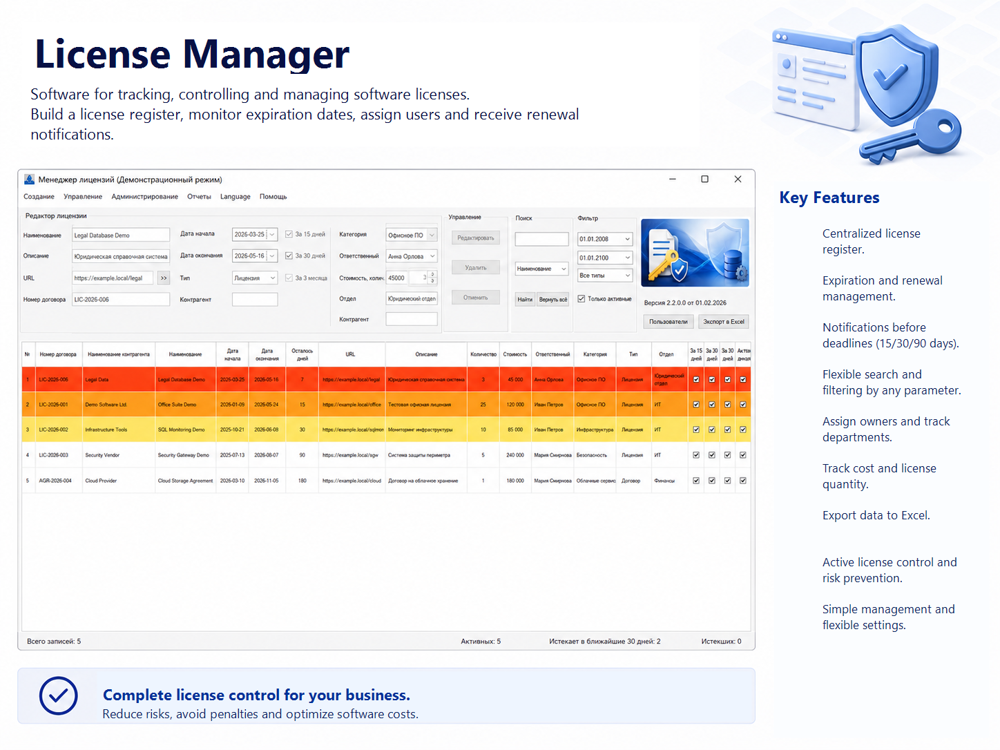
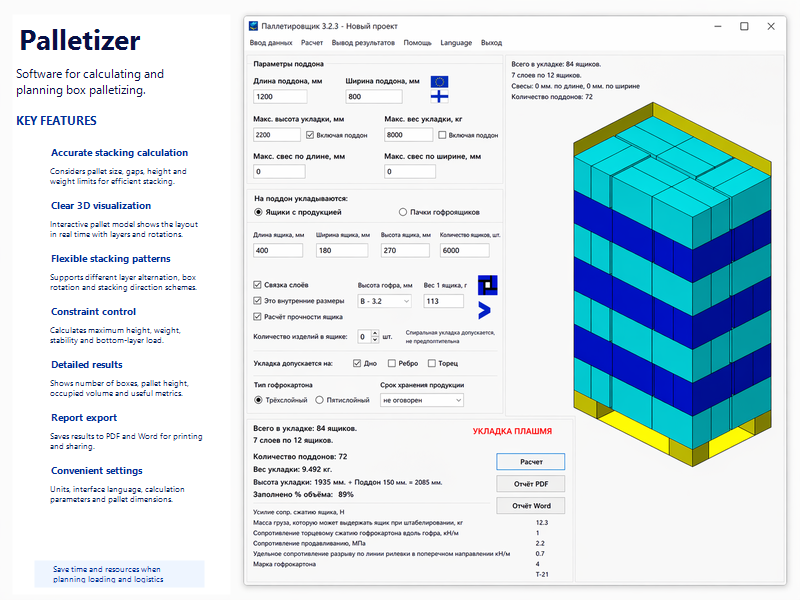
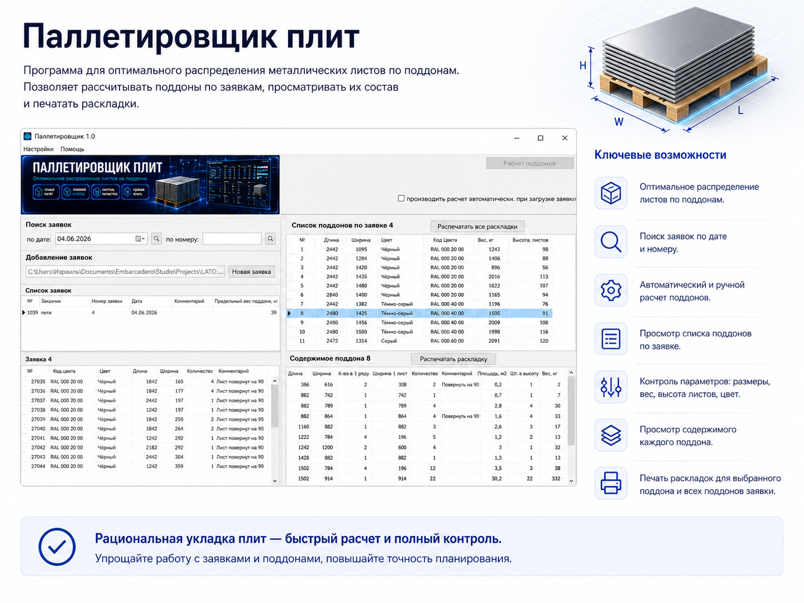
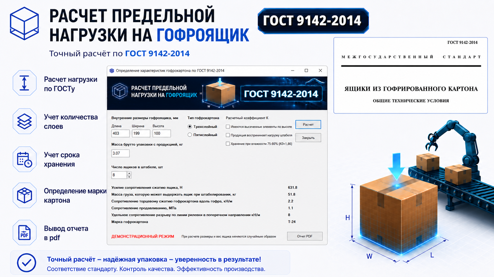
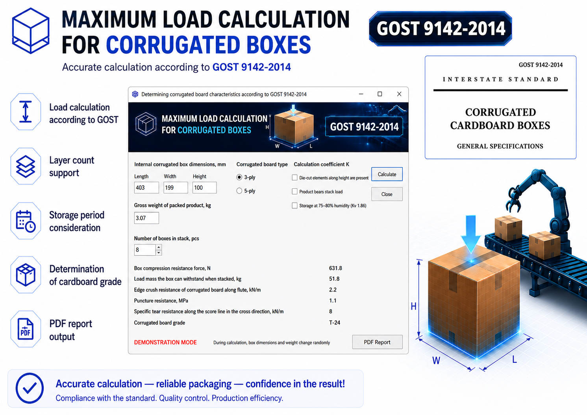

Программа «Поиск по базе данных» помогает быстро находить объекты SQL Server, анализировать структуру баз, просматривать код, искать по содержимому таблиц, работать с индексами, статистикой и связанными серверами из одного интерфейса.
Database Search helps you quickly locate SQL Server objects, inspect database structures, review code, search inside table data, work with indexes, performance statistics, and linked servers — all from one interface.
Программа объединяет в одном окне повседневные задачи поиска, навигации, анализа и диагностики SQL Server. Ниже — основные функции, которые особенно полезны в работе с большими корпоративными базами данных.
The application brings together everyday SQL Server search, navigation, analysis, and diagnostics in one window. Below are the features that matter most when working with large enterprise databases.
Поиск по хранимым процедурам, функциям, таблицам, полям, триггерам, индексам, ограничениям, учетным записям и другим объектам как по имени, так и по фрагменту кода.
Search stored procedures, functions, tables, fields, triggers, indexes, constraints, logins, and other objects by name or by code fragment.
Ищите по выбранной базе данных или сразу по всем доступным базам сервера. Это особенно удобно в сложных системах с большим количеством БД.
Search in a selected database or across all available databases on the server. Especially useful in complex environments with many databases.
Находите текстовые фрагменты в данных таблиц по всем таблицам базы или по маске имен таблиц. Удобно для поиска клиентов, документов, настроек и следов данных.
Find text fragments stored inside table data across all tables or by table-name mask. Useful for locating clients, documents, settings, and data traces.
Открывайте найденные таблицы двойным щелчком, просматривайте поля, свойства и индексы, сортируйте результаты по столбцам и переходите к связанным объектам.
Open discovered tables with a double click, inspect fields, properties, and indexes, sort result sets by columns, and move through related objects.
Код процедур и функций показывается в отдельном окне с цветовой разметкой, что делает чтение и анализ логики заметно удобнее.
Procedure and function code is displayed in a separate viewer with syntax highlighting, making code reading and logic analysis much easier.
Используйте поиск по SQL-файлам на диске, а также по подлинкованным серверам MySQL и Postgres, чтобы видеть больше, чем в пределах одного SQL Server.
Search SQL files on disk and work with linked MySQL and Postgres servers to go beyond the boundaries of a single SQL Server instance.
Гибко настраивайте панель инструментов: включайте только нужные функции, меняйте порядок кнопок и отключайте лишние элементы для ускорения работы.
Customize the toolbar to fit your workflow: enable only the tools you need, reorder buttons, and remove unnecessary elements for faster access.
Добавляйте собственные SQL-скрипты как инструменты: задавайте имя, описание, файл и режим выполнения (с результатом или без).
Add your own SQL scripts as tools: define name, description, file path, and execution mode (with or without result output).
Назначайте иконки для пользовательских инструментов: используйте собственные .ico-файлы или выбирайте из стандартных системных иконок Windows.
Assign icons to your tools: use custom .ico files or choose from a wide range of built-in Windows system icons.
Просмотр выполняемых процессов, остановка зависших сессий, анализ и перестройка индексов, статистика ожиданий, статистика задержек ввода-вывода, статистика tempdb, выполнение собственных SQL-запросов и сохранение результатов в Excel.
Inspect running processes, stop blocked sessions, analyze and rebuild indexes, review wait statistics, I/O latency statistics, tempdb statistics, execute your own SQL queries, and export results to Excel.
Сравнивайте таблицы на одном сервере или между разными серверами, просматривайте уникальные значения полей, открывайте скрипты в SSMS и быстрее находите источник ошибок, расхождений и проблем с производительностью.
Compare tables on the same server or across different servers, inspect unique field values, open scripts in SSMS, and find the source of inconsistencies, errors, and performance issues faster.
Интерфейс программы поддерживает несколько языков, что удобно для команд, работающих с клиентами, подрядчиками и коллегами из разных стран.
The software includes a multilingual interface, making it suitable for teams working with clients, contractors, and colleagues from different countries.
Разработчики получают быстрый доступ к коду и объектам, аналитики — к структуре и данным, администраторы — к диагностике и индексации. Один инструмент закрывает сразу несколько задач.
Developers get fast access to code and objects, analysts get visibility into structures and data, and DBAs get diagnostics and index maintenance tools. One application covers multiple workflows.
Главное окно программы с панелью инструментов, результатами поиска и просмотром кода объекта.
Main application window with toolbar, search results, and object code viewer.

Меню анализа состояния индексов, оптимизации и рекомендаций по созданию индексов.
Index state analysis, optimization, and index creation recommendations menu.

Меню статистики, размеры файлов баз данных, резервные копии и другие служебные показатели.
Statistics menu, database file sizes, backups, and other service metrics.

Попробуйте программу перед покупкой. Для размещения ссылки замените заглушку ниже на реальный адрес файла или страницы загрузки.
Try the software before purchase. Replace the placeholder below with the real file URL or download page.









Оптимальное распределение листовых материалов по поддонам: импорт заявок из Excel, расчет поддонов, контроль размеров, веса, высоты и цвета.
Optimal pallet distribution for sheet materials: Excel order import, pallet calculation, size, weight, height and color control.
Страница Page



Когда нужный объект, таблицу, индекс или фрагмент кода можно найти сразу, команда тратит меньше времени на ручной поиск и быстрее решает реальные задачи. За $99 программа окупается очень быстро — особенно если вы регулярно работаете с несколькими базами данных, сложной структурой SQL Server и большим количеством служебных объектов.
When the required object, table, index, or code fragment can be found immediately, your team spends less time on manual discovery and more time solving real problems. At $99, the software can pay for itself quickly — especially if you work with multiple databases, complex SQL Server structures, and a large number of service objects.